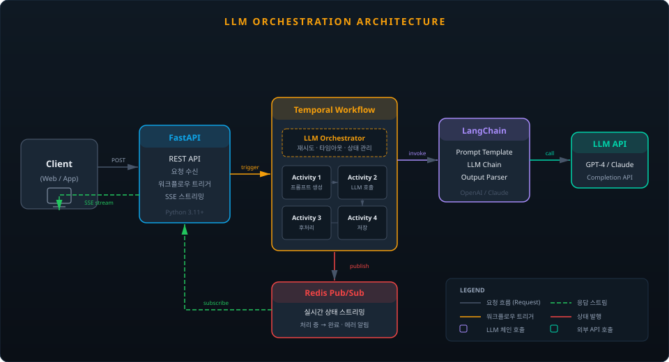

| 프로젝트명 | 요약 | 기여도 |
|---|---|---|
| NetCDF 파이프라인 | SSE → Temporal 전환, Redis 적재 + HPA 스케일링으로 타임아웃 제거 | |
| CDC 파이프라인 | Debezium Embedded로 폴링 쿼리 100% 제거, 실시간 변경 감지 | |
| LLM 오케스트레이션 | Temporal + LangChain + Redis Pub/Sub 기반 LLM 요청 파이프라인 |

Spring Boot (Java)
FastAPI (Python)
PostgreSQL / PostGIS
CloudNativePG
Kubernetes (KakaoCloud)
Docker · Helm
Terraform · ArgoCD
Kafka · Debezium
Temporal · Protobuf
NetCDF / HDF5
Jenkins · GitHub Actions
ARC · Kaniko
Ruff · SonarQube
OpenTelemetry · SigNoz
Grafana · Prometheus
Git Worktree · Claude Code
Cloudflare Tunnel
LangChain · LangGraph